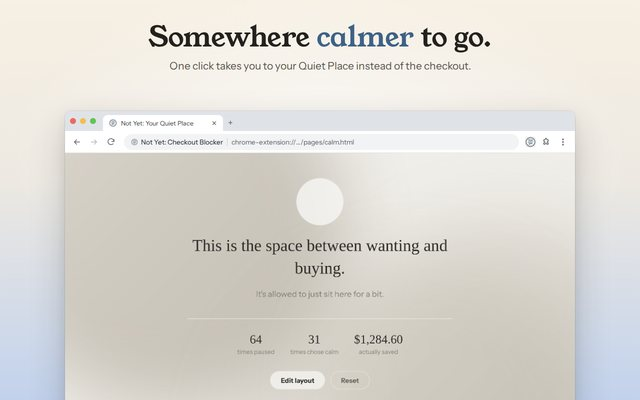

How to Do a No-Buy Month: A Plan That Doesn't Run on Willpower
A no-buy month is simple on paper: for a set stretch of time, you buy only what you need. People do it to break a habit, to free up money for something bigger, or just to see where the money goes when the autopilot is off.
Most no-buy months don't fall apart on day one. They fall apart around day ten, on a tired evening, one click from a cart. This plan is built for that evening.
1. Write Down What Counts as Essential
Before you start, list what you'll still pay for: groceries, rent and bills, medicine, getting to work, and anything already promised, like a friend's birthday gift. Write it down. Deciding in advance means you aren't negotiating with yourself at checkout.
2. Decide Your Exceptions Now
Things break. Plan for it: if something you rely on stops working, replace it with the plainest version that does the job. If an event is coming up, set its budget now. Some people keep a small fun budget for the month too. That's fine. The point is that the rules get made by calm you, not tired you.
3. Keep a Want List, Not a Cart
When you want something, write it on a list with the date. Don't leave it in a cart, one click away. At the end of the month, read the list and buy what you still want, if it fits. You'll probably be surprised how short the list has become.
4. Turn Down the Noise
Unsubscribe from store emails, turn off shopping app notifications, and mute the accounts that are mostly hauls and discount codes. Each of those is an invitation to break the month.
5. Put a Pause in Front of Every Checkout
This is the part that handles the tired evening. Not Yet: Checkout Blocker is a free Chrome extension that covers checkout pages with a pause screen. To continue, you retype a freshly generated code, which takes just long enough to remember the month you're in the middle of.
- Turn on the categories you shop most, from clothing and beauty to food delivery and electronics.
- Block your weak spots outright with Block these websites, so the pause shows on every page of those stores for the month, not just at checkout. Take them off the list when the month ends.
- Set a time limit on sites where browsing turns into buying, anywhere from 1 to 240 minutes a visit.
- Lock it in with Guard Mode, part of Not Yet Premium, if you want changing the rules mid-month to take a PIN.
6. Have Something to Do Instead
An urge fades faster when you do something else than when you just say no to it. The main button on the pause screen goes to your Quiet Place, a calm page where you can check in on how you're feeling and pick something to do instead, like a walk, a stretch, or a glass of water. You can add your own ideas too.

7. Count What You Didn't Spend
When you skip a purchase, Not Yet can add its total to a running "saved" number, and your recap shows how often a pause ended with you walking away. That's a lot more motivating than a list of things you didn't buy.
If You Slip
One purchase doesn't cancel the month. Write it down, notice what was going on when it happened, and keep going. The goal was never a perfect streak. It was a month of buying things on purpose.